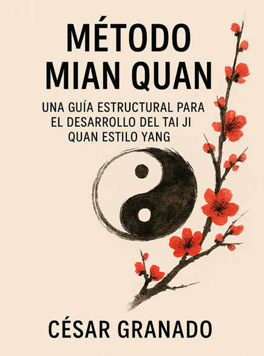
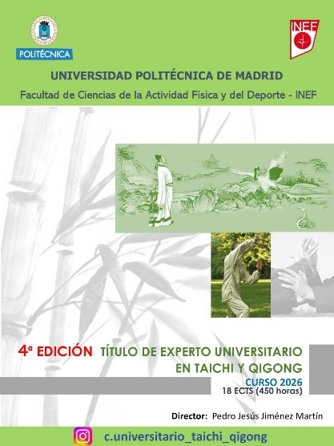
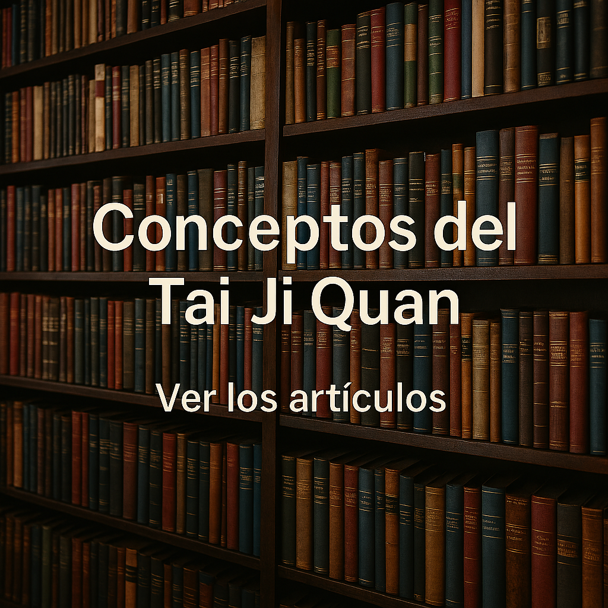

Mian Quan Tai Ji
César Granado
César Granado

Una obra dirigida a practicantes y profesionales que buscan una estructura lógica para orientarse en el mapa técnico del Tai Ji Quan. Presenta un marco conceptual y una metodología de análisis aplicable a la forma del estilo Yang , desde un enfoque riguroso y sistemático.
Disponible en AmazonInscripción abierta para la próxima promoción del curso de Experto Universitario en Tai Chi y Qi Gong que ofrece la Facultad de Educación Física de la Universidad Politécnica de Madrid
Más información

En esta sección encontrarás diversos artículos dedicados a los conceptos fundamentales del Tai Ji Quan, como las cuatro características, los tres niveles de práctica y otros elementos clave que estructuran su estudio y comprensión.
Ver artítulos